ПРОБЛЕМИ ОТ ПРЕГРЯВАНЕ И НЕРЕДОВНА ПРОФИЛАКТИКА
В съвременния свят мобилността е от особено важно значение за всеки от нас. Мобилните комуникации и мобилните компютри стават част от нашето ежедневие. Лаптопите се превърнаха в част от нашия багаж, но както всяко друго устройство, така и те се нуждаят от определени грижи за да ни служат вярно по-дълго време. Все повече лаптопите интегрират в себе си възможностите на настолните компютри. Това ни предлага мощност, но и носи със себе си своите недостатъци, които накратко можем да сведем до - греене и охлаждане. Основната причина за проблемите и дефектируемостта на съвременните лаптопи идват от охлаждането. Тези повреди водят до прегряване на основните чипове (чипсети) и централния процесор. Охлаждането е най-важното звено за добрата и безотказна работа на лаптопите. Ако охладителната система се повреди или и се намали капацитета, това неминуемо води до повреди в дънната платка или централния процесор. Охладителната система много рядко се поврежда. Това което се случва най-често е намаляване капацитета на охлаждането. Причината за това е постепенното задръстване с прах на медните ребра и изхода на вентилатора и цялата охладителна система се превръща в това, което виждате на следващите изображения:
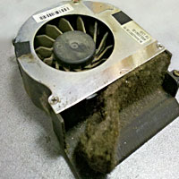
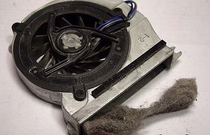
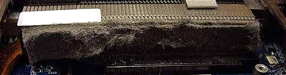
По този начин се ограничава притока на горещия въздух от вътре навън, което води до повишаване на работните температури и след време те стават критични за работата на чипсетите и централния процесор. Оттук нататък лаптопа започва да създава проблеми като рестартиране по време на работа, син екран в MS Windows средата, безпричинно спиране на лаптопа и т.н., докато в един момент спира да показва образ. Този процес на прегряване довежда до тъй нареченото отлепяне на чипсетите от дънната платка. За да е по-ясно за какво става въпрос вижте следващите изображения:
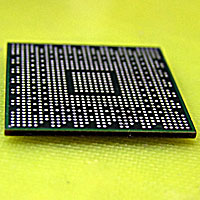
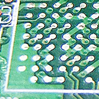
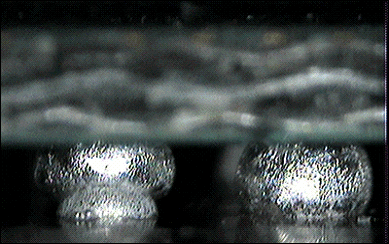
Чипсетите се произвеждат в тъй наречения BGA вариант за BGA монтаж (Ball Grid Array). Това е корпус, при който чипа сe запоява към дънната платка посредством малки топченца, които са монтирани от долната страна на чипа (погледнете първото изображение по-горе). На второто изображение виждате дънната платка и тъй наречените падове върху които трябва да се запоят топченцата на чипсета. След прегряване на лаптопа някои от тези топченца се отделят от пада си и губят контакт с дънната платка и понякога това довежда до спукване на писти в самия чипсет и той трябва да бъде подменен с нов. Ако загледате третото изображение по-горе ще видите как топченцето вляво е с лош контакт към дънната платка и проблемите сигурно вече са започнали. Един BGA чипсет за лаптоп обикновено има няколко стотин, дори хиляда такива топченца и когато се наруши някоя връзка с платката започват проблемите ви.
За да бъде отстранен този проблем, трябва чипсета да се свали от платката, да му се поставят нови топченца и отново да се запои на нея. Това се извършва само с вискотехнологични машини, които са създадени за тази цел. Накратко тази процедура ние наричаме ребоулинг (re-balling). Тази процедура изисква доста голяма прецизност и професионални умения. За последователно онагледяване на всички тези етапи можете да погледнете по-долните изображения: Първо виждате чипсета с почистени падове и без топченца, следва изображение с нови топченца с големина според чипсета от 0.3 до 0.76 мм, на третото изображение е показана манипулацията по поставяне на нови топченца на чипсета, посредством специфични шаблони за всеки чип, следва изображение на чипсета с новите си топченца и най-накрая след почистване на дъннната платка от старите топченца на петото изображение, можем да преминем към запояване на чипа обратно на добре почистената дънната платка от последното изображение.
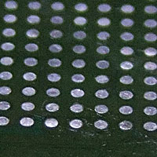
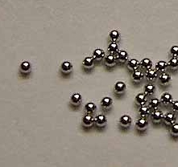
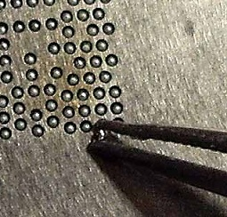
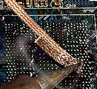
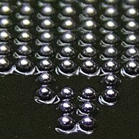
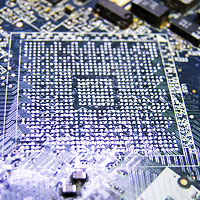
Начините на запояване са три основни вида – с горещ въздух, с инфрачервен светлинен температурен източник и с най-новите космически технологии за запояване чрез инфрачервен несветлинен (невидим) източник . У нас най-често срещания метод за отстраняване на проблема е използването на така наречения пистолет за горещ въздух. Това е кривоинтерпретиран метод за машина с горещ въздух, но изпълнено изцяло с подръчни средства (пистолет може да си купи всеки). Пистолетът за горещ въздух не създава равномерна температура за запояване, често води до локално прегряване на чипсета или дънната платка. Този вид ремонти водят до изключително краткотраен успех или повреждане на самия чип поради неравномерното му нагряване. Повредата е или вътрешна или е се повреждат контактните падовете на самия чип. Погледнете изображенията по-долу: второто е реално увеличение на маркираната с червено част от първото изображение. Сами виждате как се повреждат контактните падове на чипа. Този чип е вече увреден и тази дънна платка ще се нуждае от нов такъв чип, който доста често е на много висока цена.
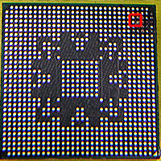
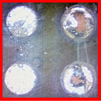
Следващите изображения са направо без коментар, защото топлината от пистолета за горещ въздух направо е стопила пластмасовите детайли на първото изображение. Това няма как да се случи с професионални машини с инфрачервени източници, които щадят всички пластмасови компоненти. А на второ изображение виждате как изглежда платка, която е работена с пистолет за горещ въздух. Непрофесионалната работа и консумативи се виждат дори и от непрофесионално око.
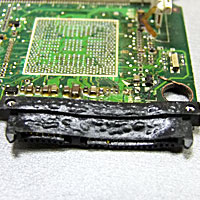
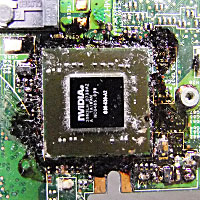
Фирма ТОРИН КОМПЮТЪРС разполага с професионална машина за запояване от най-последно поколение, където източника на топлина е инфрачервен в невидимата за окото светлинна област, което съхранява здравето на работещия с машината, съхранява платката и дава изключителни резултати при работа. Можете да го видите на снимката по-долу. Като всеки любознателен българин и ние не се поколебахме да попитаме производителите как точно работи този източник на топлина, но ни беше отговорено кратко и ясно, че това е "know-how" технология на фирмата производител от Германия.
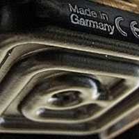
Машината се управлява от компютърен софтуер с предварително зададени профили, които отговарят на производителите и качеството на платките. Само такава машина ще съхрани пластмасовите компоненти на платката и процедурата да бъде успешна. Изключително важни за успешността и трайността на процедурата са и консумативите, които се използват. Най-важния от тях е специален флюс, който обуславя средата на запояване на чипсетите. Фирма ТОРИН КОМПЮТЪРС използва най-известния с качествата си флюс на американската фирма AMTECH. След като извършим залепянето на чипсета ние полагаме максимални усилия да подсилим охладителната система за да предотвратим бъдещи проблеми. В следствие на нашето know-how ние постигаме до 10 градуса по-ниски работни температури, като за контакт между охладителната система и чипсетите използваме най-добрата термопаста на световния пазар. В крайна сметка можем да заключим, че качеството на машината и използваните консумативи обуславя високата успеваемост при процеса, който ние извършваме. При тези ремонти ние достигнахме 90% успеваемост и устойчивост на ремонта във времето. За съжаление процедурата не винаги може да бъде извършена поради нискокачествените материали, които някои производители на лаптопи използват при производството на дънните платки. Новите технологии използват тинол, който се нуждае от температура над 220-230 градуса за да се разтопи. Дънните платки са няколкослойни, най-вече 6 слойни, но понякога 8 и дори 12 слойни. Те представляват 6 платки, които са залепени една за друга и отстрани те представляват една единна дънна платка. Използването на нискокачествени материали при производството на дъна предизвикват формирането на вътрешни напрежения между словете и когато платката трябва да бъде нагрята до необходимата температура за запояване, вътрешните напрежения се усилват и надуват платката. Това не позволява да се извърши запояване (залепяне) на чипсета. Друга причина за неуспех са вече трайно прегряли чипсети, при които са настъпили необратими процеси (микропукнатини) и тогава е необходимо тяхната подмяна.